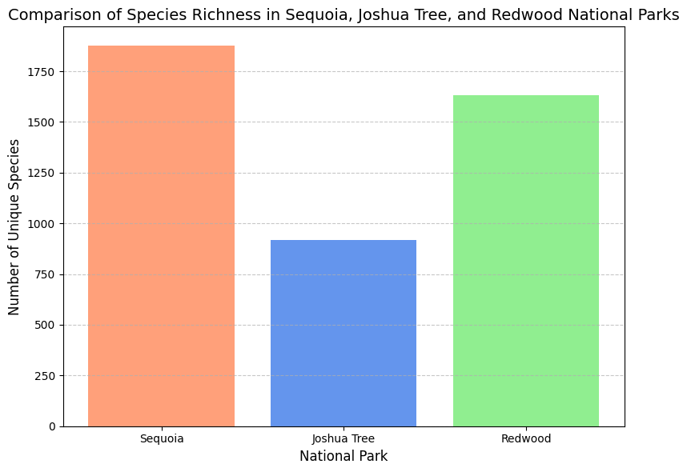

About California'a Diverse Species
This page highlights the vast biodiversity in the 3 selected national parks: Joshua Tree, Sequoia/Kings Canyon, and Redwood National Parks. Below is a look at ... [FINISH THIS]
Vouchers and References
This boxplot visualization displays the combined counts of vouchers and references across various categories in the three national parks. The visualization highlights variations in species documentation across parks and categories. The boxplot also has zero outliers because they may indicate gaps in species surveys or a lack of physical evidence for certain species in the parks. These gaps indicate the importance of expanding documentation efforts, especially in categories with low representation. By analyzing the distribution of vouchers and references, park managers can identify underrepresented species groups and prioritize the future research or conservation efforts to ensure comprehensive biodiversity records.
species family
something about this plot
species richnes by abundance
something about this plot